Load libraries
source("~/who_ferritin_comment/src/results_helper_funcs.R")
library(dplyr) # for fluid grammar
library(ggplot2) # for plotting
library(rms) # for restricted cubic splines
library(mcp) # for bayesian breakpoint analysissource("~/who_ferritin_comment/src/results_helper_funcs.R")
library(dplyr) # for fluid grammar
library(ggplot2) # for plotting
library(rms) # for restricted cubic splines
library(mcp) # for bayesian breakpoint analysisFIGUREPATH <- "~/who_ferritin_comment/results/figures/"
TABLEPATH <- "~/who_ferritin_comment/results/tables/"This document is intended to be run as is, but it is written into a Quarto document (so code chunks + text) to enable additional experimentation by the user if deemed necessary.
In this script we assume the following:
Data / cohort descriptions are produced and discussed elsewhere. This document outputs result tables and graphs. This document is also available as an R script.
# Load in your data frame. Note the analysis assumptions 1), 2), and 3).
data <- readRDS("~/who_ferritin_comment/data/h2000_menstr_women_apparently_healthy.rds")sTfR.exists <- FALSEplot_ferritin_hb <- ggplot(data = data, aes(x = Ferritin,
y = Hb)) +
geom_point() +
labs(y = "Haemoglobin") +
xlim(c(0, 150)) + # TODO: This provides a reasonable range but is there a better one?
theme_minimal()
# Save plot to a PDF file
ggsave(paste0(FIGUREPATH, "ferritin_hb_plot.pdf"), plot_ferritin_hb, width = 8, height = 6)
plot_ferritin_hb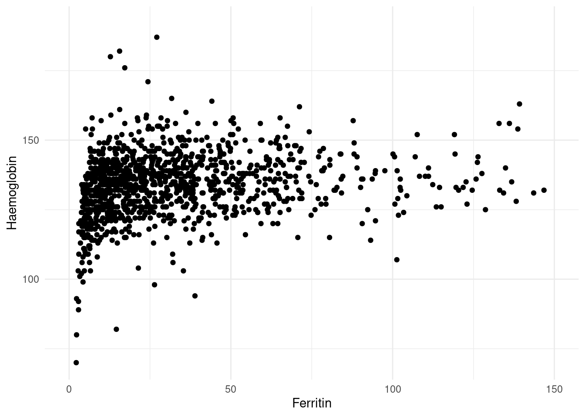
Our restricted cubic spline approach relies on the rms: Regression Modeling Strategies package. We use the ordinary least squares function ols() to fit a model with a “special transformation function” rcs() from rms.trans. From the documentation:
rcsis a linear tail-restricted cubic spline function (natural spline, for
which thercspline.evalfunction generates the design matrix, the presence of system optionrcspccausesrcspline.evalto be invoked withpc=TRUE, and the presence of system optionfractiedcauses this value to be passed torcspline.evalas the fractied argument)
The rcspline.eval relies on the Hmisc package. The default behavior is to use 5 knots placed at estimated quantiles of x:
… knots will be estimated using default quantiles of x. For 3 knots, the outer quantiles used are 0.10 and 0.90. For 4-6 knots, the outer quantiles used are 0.05 and 0.95. For >6, the outer quantiles are 0.025 and 0.975. The knots are equally spaced between these on the quantile scale. For fewer than 100 non-missing values of x, the outer knots are the 5th smallest and largest x.
Other configurations of knot placements may be useful to consider if well motivated, but we’ll settle for varying just the number of knots.
rms wants us to compute and record the data distribution stats first:
dd <- datadist(data)
options(datadist = "dd")We can then proceed with fitting the restricted cubic splines.
knots <- 3:15
fits <- vector("list", length = length(knots))
for (i in 1:length(knots)) {
fits[[i]] <- ols(Hb ~ rcs(Ferritin, knots[i]),
data = data,
x = TRUE,
y = TRUE)
}The main idea in using restricted cubic splines is that we are likely to observe a “saddle point”, which can be interpreted as an inflection point in the behavior between X and Y. If the saddle point exists, we can evaluate the zero derivative to find a point estimate for the threshold we’re attempting to determine. Let’s produce plots of all of our fits:
for (i in 1:length(knots)) {
p <- plot_rcs(data, fits[[i]], n_knot = i + 2, zoom = F)
# Save plot to a PDF file
ggsave(paste0(FIGUREPATH, "hb_fer_rcs_", i + 2, ".pdf"), p, width = 8, height = 6, device = cairo_pdf)
print(p)
}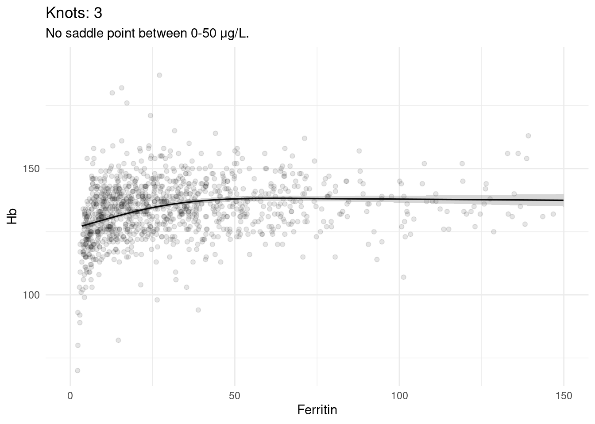
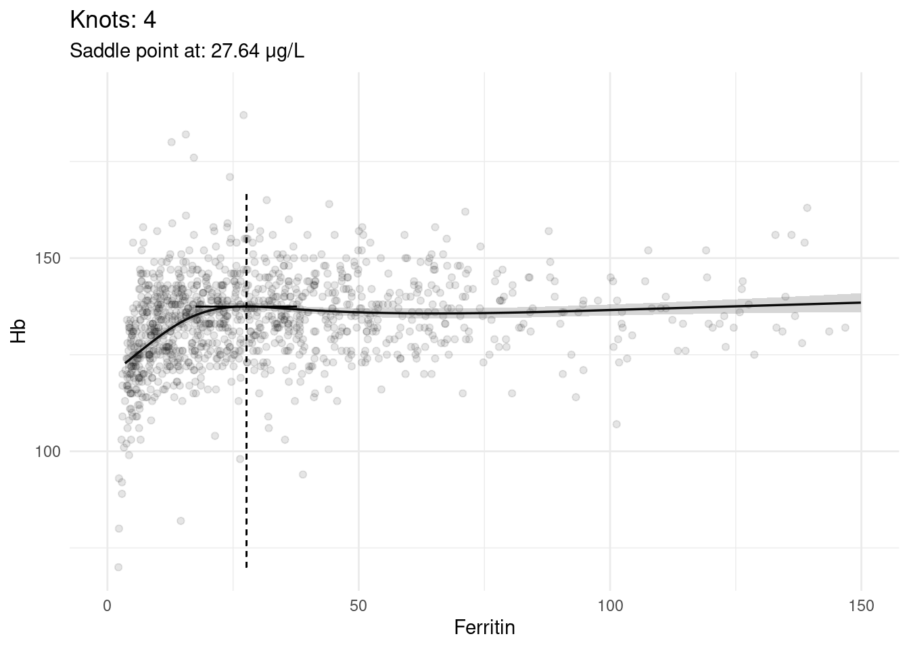
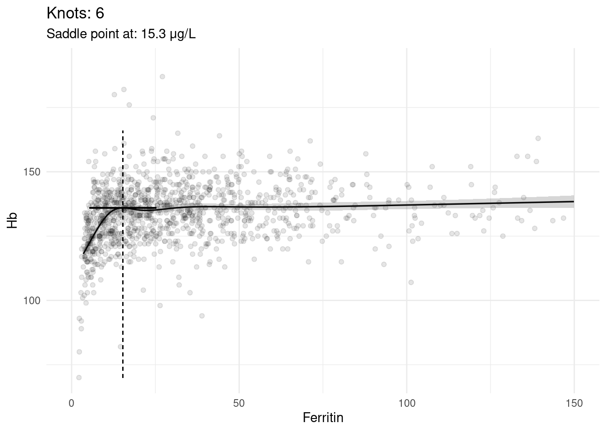
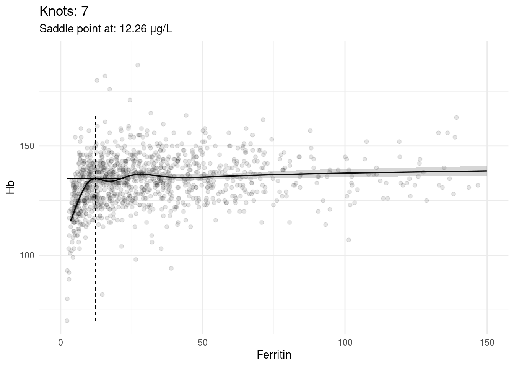
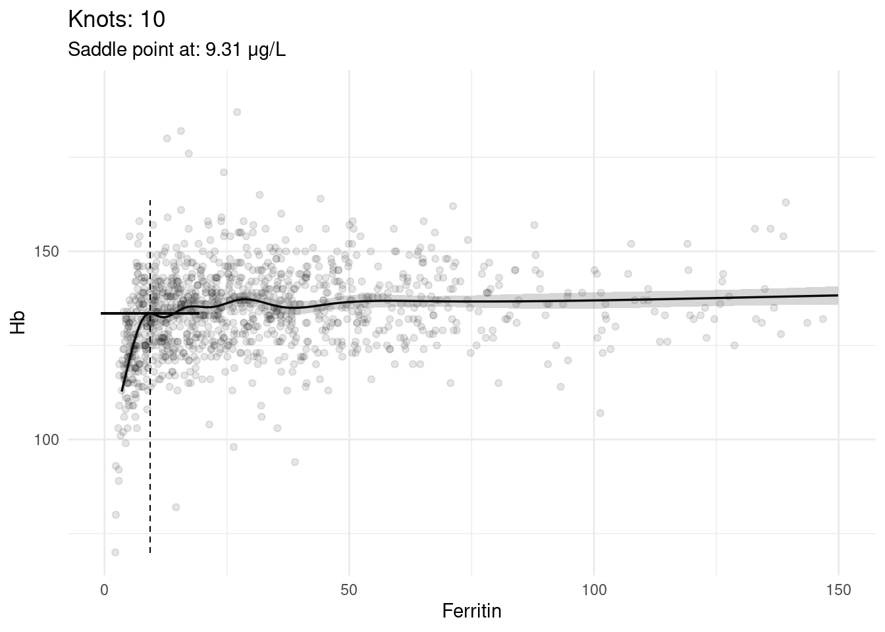

We may gain better understanding by zooming in a little:
for (i in 1:length(knots)) {
p <- plot_rcs(data, fits[[i]], n_knot = i + 2, zoom = T)
# Save plot to a PDF file
ggsave(paste0(FIGUREPATH, "hb_fer_rcs_", i + 2, "_zoomed.pdf"), p, width = 8, height = 6, device = cairo_pdf)
print(p)
}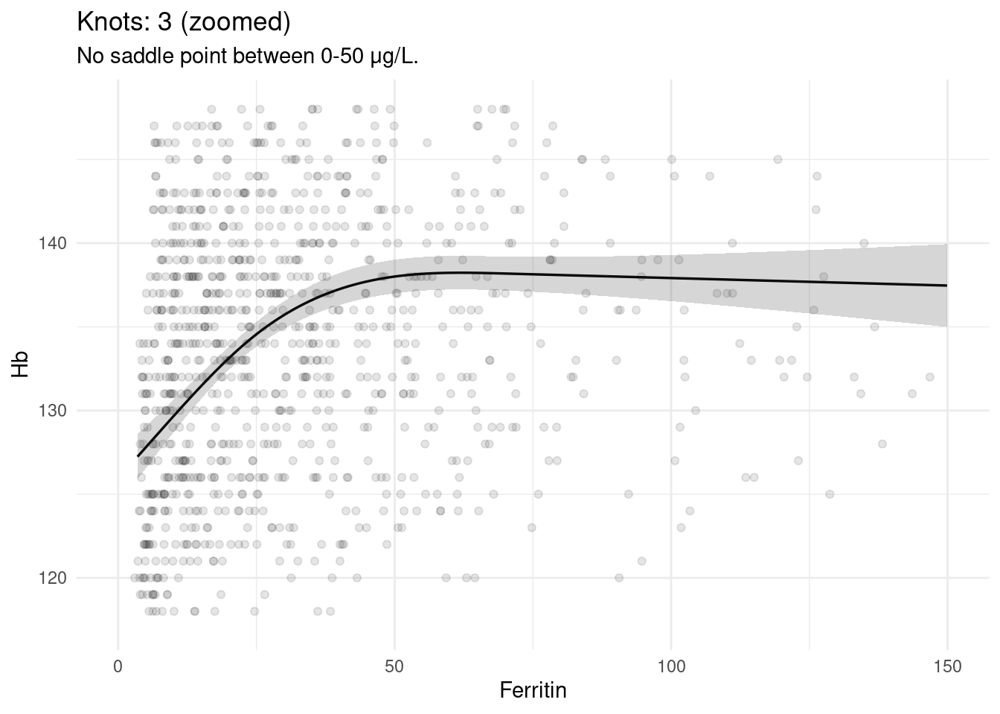
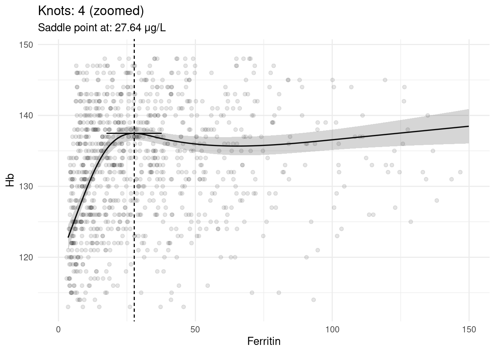
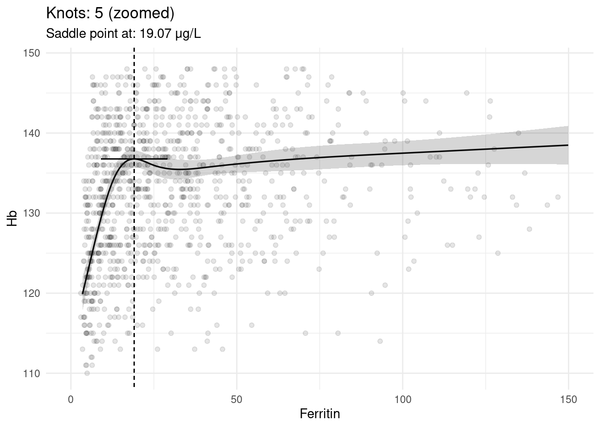
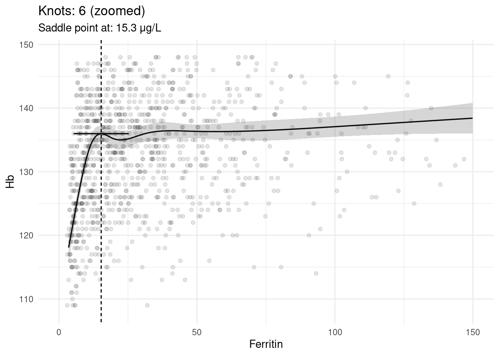
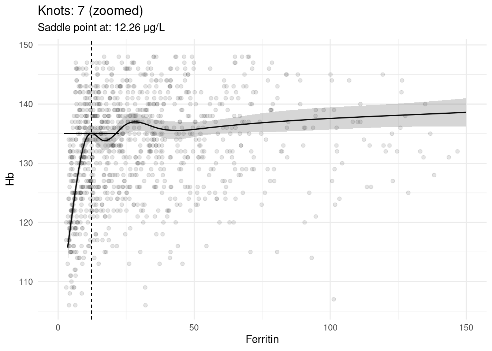
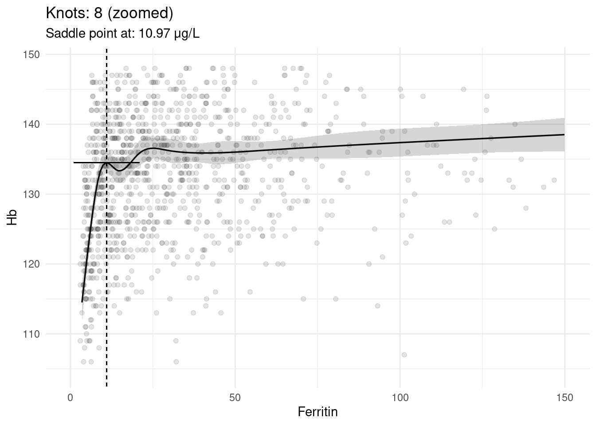

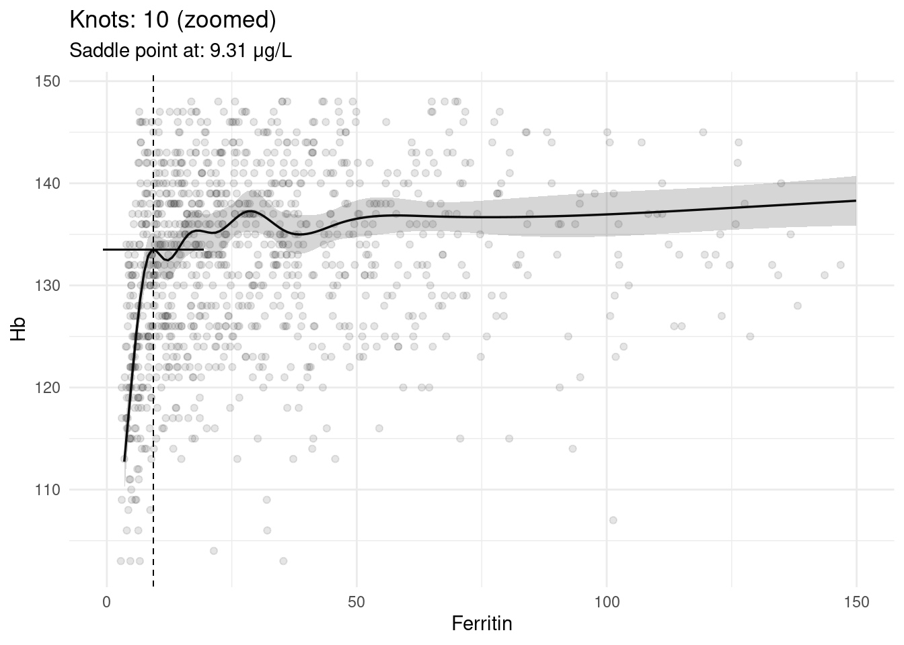
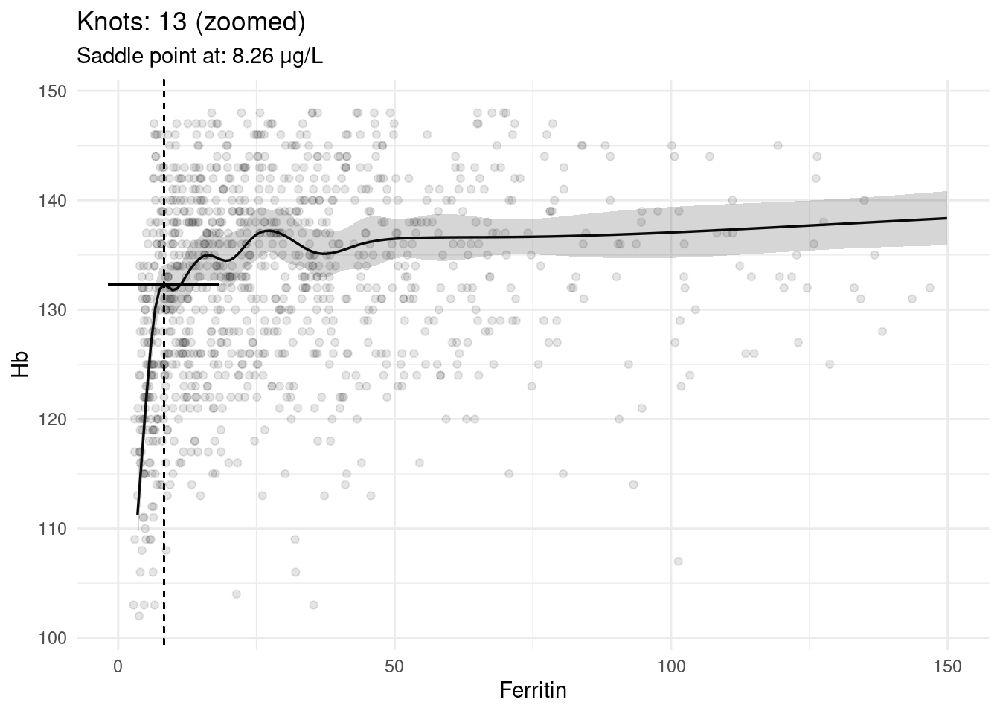